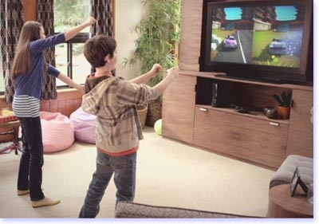

With the recent advances in technology, there are a variety of mediums companies can use to design interactive Learning Systems for children, the disabled, or even athletes who need to learn motor skills. Popular products such as the Wii and Xbox Kinect are fully capable of becoming great interactive Learning Systems for the target audiences we mentioned previously. However, we are interested in helping you design the most innovative and effective Learning System possible. This is why we are going to explain the science behind 3D simulations.
The human visual system is fully equipped to abstract high-level information regarding axis orientation. In other words, via a separate neural channel in the human brain, people are able to recognize what an object is and what it is doing by analyzing its formation. Motion parallax, which is the key stereoscopic cue for depth perception, allows people to perceive depth in the visual fields and subsequently estimate the distance of a given object. The science behind the human visual system makes it possible to create vivid 3D simulations using imaginary simulated objects to supplement the psychomotor learning process. Learning Systems of this nature are currently very “cutting edge” and in the following lessons we will explain how to design the optimal 3D Learning System for psychomotor skill processing.